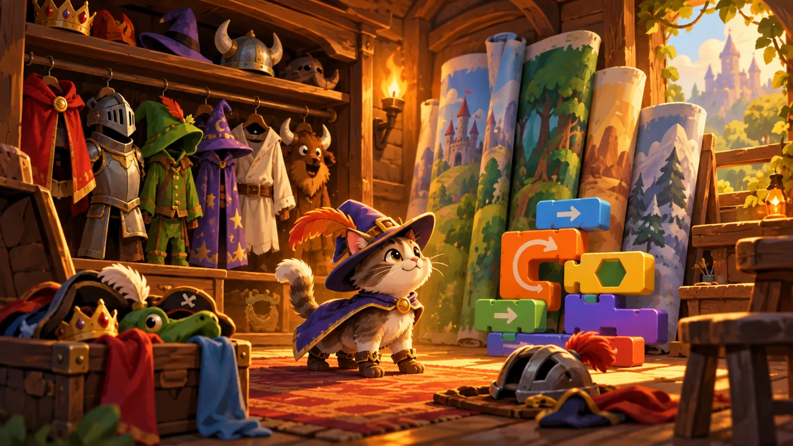
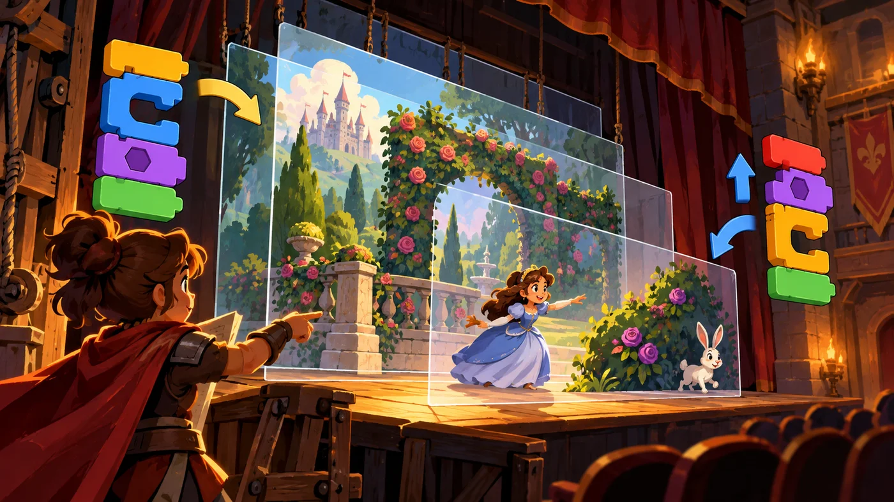

扣哒考级 · GESP 图形化 一级 · 第 2 单元 | 积木花园 BLOCKBLOOM GARDEN
换装小屋 舞台、角色与背景
Stage, Sprites and Backdrops

安雅
红发队长 · 你的旅伴
换装小屋的门帘一掀，你先被晃了眼：屋里挂满了衣服——红的、蓝的、带花纹的，
一排排吊在木杆上，像一整面彩虹。墙边还立着一卷卷画好的布景，随时能换。
安雅拍了拍你肩上的通行证：你的角色要上台了，总得先有身像样的行头。
安雅拍了拍你肩上的通行证：你的角色要上台了，总得先有身像样的行头。
安雅 · 红发队长
这一单元要分清三样东西：角色是台上的演员，造型是这个演员的几套衣服，
背景是整张布景。分不清它们，一级卷子里"角色和背景有什么区别"那道题就必错——这类题几乎每场都有。
0 单元导语与目标
Before We Start
0.1 学习目标
- 说清舞台、角色、背景是什么，以及它们之间的关系；
- 会导入角色与背景，会给角色"换衣服"（切换造型）；
- 掌握说、想、显示、隐藏、大小、图形特效这几块外观积木；
- 知道背景和角色的区别，知道背景也能挂脚本；
- 会用一个作品的多个角色，让它们各演各的。
0.2 考纲对照
| 考纲知识块 | 考纲要求 | 本单元小节 |
|---|---|---|
| 6 角色的操作 | 导入角色，角色说……，颜色，大小，显示，隐藏，造型编辑/切换，声音编辑，图形特效 | 1.2、2.1～2.3、4.1～4.3 |
| 7 背景的操作 | 导入背景，背景和角色的区别，背景编辑/切换，声音编辑，设置背景音乐 | 3.1～3.3、4.3 |
| 2 图形化编程平台 | 舞台区、背景区、角色区的使用 | 1.1、3.2 |
一句话概括这一单元：学会"换人、换衣、换场景"。
1 舞台与角色
Stage and Sprites
1.1 舞台有多大
换装小屋的最里面有一间试衣间，墙上挂着一整幅画——那幅画就是舞台。
图 1（SVG）：舞台的尺寸与原点
打个比方：舞台就像一张方格纸。左上角坐标是 (-240, 180)，右下角是 (240, -180)，纸张正中间穿一根针，那根针就是原点 (0, 0)。
1.2 角色从哪儿来
角色区下面有四个按钮，分别对应四种"请演员上台"的方式：
| 按钮 | 作用 | 什么时候用 |
|---|---|---|
| 选择一个角色 | 从角色库里挑一个现成的 | 想要小猫、小鸟、球这类常见形象 |
| 绘制 | 自己用画笔在编辑器里画一个 | 想要独一无二的角色 |
| 随机 | 让编辑器随便送你一个 | 想快速试效果 |
| 上传角色 | 把电脑里的图片导进来 | 已经有现成的图片素材 |
1.3 一个作品能有几个角色
答案是：想放几个就放几个。每个角色都有自己独立的属性（位置、方向、大小、造型） 和独立的一份脚本。
图 2（SVG）：一个角色与多个角色的区别

assets/illustrations/scratch-L1-02-01_costume_house.webp
【配图位】温馨木屋里一只衣柜挂满不同造型的戏服，墙上一卷卷画好的背景布景，一只小猫正在试穿。（提示词见《GESP配图清单与AI绘图提示词》第四节 1-2）
2 角色的造型
Costumes
2.1 造型就是角色的衣服
同一个角色，可以准备好几套"衣服"。每一套就叫一个造型。
比如小猫角色，库里自带两套造型；一个"跳舞的女孩"可能有十几套造型， 换着切换就跳起舞来了。造型管的是"角色长什么样"，脚本管的是"角色做什么"。
2.2 切换造型的三块积木
重点示例：外观分类里的三块造型积木
图形化积木
读法 第一块直接跳到指定造型；第二块按造型列表顺序往后轮一张；第三块管大小，和造型无关
要分清：切换造型为是按名字跳过去，跳到哪儿由你说了算；下一个造型是按顺序往下轮一张，轮到最后一个会回到第一张。
2.3 用造型做动画
动画的原理很简单：把造型一张张快速换过去，眼睛就看成"动起来"了。
重点示例：让角色自己走起来
图形化积木
要点 换造型 + 移动 + 等一小会儿，三件事放进循环里，就得到一段连贯的"走路"动画
3 背景
Backdrops
3.1 背景与角色的区别
图 4（SVG）：背景与角色的五点区别
3.2 添加与切换背景
换背景和换造型是一个道理，只不过换的是"整张布景"。常用的积木是：
重点示例：给舞台换布景
图形化积木
读法 "换成……背景"按名字换；"下一个背景"按顺序轮

assets/illustrations/scratch-L1-02-02_stage_layers.webp
【配图位】舞台侧视图，多层透明图层叠放，角色分别站在不同层上，箭头标出"移到最前 / 移到最后"。（提示词见《GESP配图清单与AI绘图提示词》第四节 1-2）
3.3 背景也有自己的脚本
别忘了：背景也是一张"角色卡片"。点一下背景区里的背景，脚本区显示的就是它的脚本。
重点示例：背景换装脚本
图形化积木
要点 背景换掉之后，舞台上的角色还在原地——它们各管各的，互不干扰
4 外观与声音
Looks and Sound
4.1 说、想、显示与隐藏
重点示例：外观分类里最常用的六块
图形化积木
读法 "说"是对话气泡，"思考"是思想气泡；"显示 / 隐藏"是一对开关，控制角色看得见看不见
打个比方：说是角色的嘴，思考是角色的心里话——气泡形状不一样；显示是把演员推上台，隐藏是让他退到幕后。隐藏起来的角色照样能执行脚本，只是你看不见它。
4.2 大小与图形特效
重点示例：让角色变大、变色、变透明
图形化积木
要点 "设为"是把特效一次性调成某个值；"增加"是在原来的基础上再叠一点
图 6（SVG）：外观特效一览
4.3 给角色配音
角色可以"发声"：在声音分类里挑一段现成音效，或者自己录一段。
重点示例：三种播放方式
图形化积木
要点 带"等待播完"的会先停下等它播完再往下走；不带的那一块会立刻往下执行，声音和后面的积木同时进行
背景音乐怎么设？在背景的脚本里放一块"播放声音……等待播完"，外面套上"重复执行"，就是一段不断循环的背景音乐——这正是考纲里"设置背景音乐"那一条。
5 代码实战
Level Practice
这一关的舞台上不止一个东西：主角、宝石，还有围成一圈的方块。 你要用最少的积木，把它们一次走完。
关卡 6
宝石方块
进入关卡 →
故事：
花园的石板地被宝石围了一圈，你的角色站在中间。往右、往上、再往左……
把这些格子一次走遍，每一颗宝石都要拿到。
思路：数一数格子：右 1、上 1、左 2、下 2、右 2。每一段都写成"面向某个方向 + 移动若干步"， 按顺序扣好，角色就会沿着这个方框走一圈。
重点示例：用"面向 + 移动"走出一个方框
图形化积木
读法 "面向"决定朝哪边走，"移动"决定走多远；两块一组，就是一段路
自己试一试：把整段脚本复制一遍再粘到下面，角色就会再绕一圈。如果你觉得这样太啰嗦——下一单元有个更省事的办法。
注意脚本区里，一个作品可以有好几个角色（方块、宝石都可能单独算一个角色）， 但真正需要你写脚本的，通常只有主角一个。
关卡里"一格"和积木里"一步"的关系：关卡网格的一格，一般对应"移动 1 步"。所以"移动 2 步"就是往前走两个格子——这也是做这类关卡题最常用的换算。
去扣哒世界闯这一关 →
6 常见陷阱
Common Traps
陷阱 1：以为"造型"和"角色"是一回事。角色是台上的演员，造型是这个演员的几套衣服。
正确理解：一个角色可以有多个造型；换造型不会换角色，角色身上挂的脚本也不会因此变。
正确理解：一个角色可以有多个造型；换造型不会换角色，角色身上挂的脚本也不会因此变。
陷阱 2：把"下一个造型"当成"显示下一个角色"。它换的是同一个角色的造型，不会切换到别的角色。
正确做法：要在角色之间切换"出场"，用的是"显示 / 隐藏"积木。
正确做法：要在角色之间切换"出场"，用的是"显示 / 隐藏"积木。
陷阱 3：把背景当成"最大的角色"。背景铺满舞台、没有坐标、永远在最底层。
正确理解：想让画面"在前面"出现，得用角色，不是背景。
正确理解：想让画面"在前面"出现，得用角色，不是背景。
陷阱 4：把"播放声音"和"播放声音……等待播完"混着用。前者的下一块积木会立刻执行，后者会等声音放完。
正确做法：想让动作跟着声音走，就用带"等待播完"的那一块。
正确做法：想让动作跟着声音走，就用带"等待播完"的那一块。
7 题目练习
Practice
前 2 题改编自 2026 年 9 月 · 图形化编程 一级 第 2 题与判断题 第 1 题，其余为原创练习题。
改编自 2026 年 9 月 · 图形化编程 一 级 · 第 2 题单选题
在图形化编程造型编辑器的工具栏里，"选择工具"（箭头图标）的主要用途是（ ）。
A.绘制任意形状的线条
B.选中并移动、变形矢量图形中的部分元素
C.擦除像素点
D.用颜色填充封闭区域
B.选中并移动、变形矢量图形中的部分元素
C.擦除像素点
D.用颜色填充封闭区域
查看答案与详解
答案：B。造型编辑器里每个工具分工不同，"选择工具"就是用来选中造型里的某一部分，然后拖动、缩放或变形它。
A 错：画线用的是画笔 / 线条工具；
C 错：擦除用的是橡皮工具；
D 错：填色用的是油漆桶。
一句话记：箭头负责"挑东西"，别的工具负责"改东西"。
对应小节2.1 造型就是角色的衣服。
A 错：画线用的是画笔 / 线条工具；
C 错：擦除用的是橡皮工具；
D 错：填色用的是油漆桶。
一句话记：箭头负责"挑东西"，别的工具负责"改东西"。
对应小节2.1 造型就是角色的衣服。
改编自 2026 年 9 月 · 图形化编程 一 级 · 判断题 1 题判断题
在图形化编程中，导出角色 Cat，可以得到一个存储该角色的文件；使用时可以通过菜单栏里的"从电脑中上传"来使用这个 Cat 角色。（ ）
（ ）
查看答案与详解
答案：正确（√）。角色可以被导出成一份文件保存在电脑里，换一台电脑、换一个作品时，再用"从电脑中上传"把它导回来，造型和脚本都还在。
这一条对应的正是考纲里"导入角色"和"从本地打开"两项能力。
对应小节1.2 角色从哪儿来；4.1 保存与打开。
这一条对应的正是考纲里"导入角色"和"从本地打开"两项能力。
对应小节1.2 角色从哪儿来；4.1 保存与打开。
原创练习题单选题
换装小屋里，小猫角色一共有 3 个造型。执行"下一个造型"这块积木时，角色的变化是（ ）。
A.变成另一个角色
B.在同一个角色的 3 个造型之间按顺序轮换
C.角色的大小变大一倍
D.角色被隐藏起来
B.在同一个角色的 3 个造型之间按顺序轮换
C.角色的大小变大一倍
D.角色被隐藏起来
查看答案与详解
答案：B。"下一个造型"换的是造型，不是角色；按造型列表顺序往后轮一张，轮到最后一张会回到第一张。
A 错：角色之间的切换要用"显示 / 隐藏"，不是换造型；
C 错：管大小的是"将大小设为 / 增加"；
D 错：隐藏用的是"隐藏"积木。
对应小节2.2 切换造型的三块积木。
A 错：角色之间的切换要用"显示 / 隐藏"，不是换造型；
C 错：管大小的是"将大小设为 / 增加"；
D 错：隐藏用的是"隐藏"积木。
对应小节2.2 切换造型的三块积木。
原创练习题单选题
下列关于舞台和背景的说法中，正确的是（ ）。
A.背景可以有自己的脚本，点绿旗后也会执行
B.背景不能换，一个作品只能用一张
C.背景有 x、y 坐标，可以像角色一样移动
D.背景永远在角色前面
B.背景不能换，一个作品只能用一张
C.背景有 x、y 坐标，可以像角色一样移动
D.背景永远在角色前面
查看答案与详解
答案：A。背景就是舞台上的一个大角色，点一下背景区里的它就切到它的脚本，照样能挂"当绿旗被点击"。
B 错：一个作品可以有多张背景，随时可以换；
C 错：背景铺满整个舞台，没有位置坐标，也不能移动；
D 错：背景在最底层，永远在角色后面。
对应小节3.1、3.3 背景与角色。
B 错：一个作品可以有多张背景，随时可以换；
C 错：背景铺满整个舞台，没有位置坐标，也不能移动；
D 错：背景在最底层，永远在角色后面。
对应小节3.1、3.3 背景与角色。
原创练习题单选题
要让一个角色从画面上消失，但它的脚本还能继续执行，应该用哪一块积木（ ）。
A.将大小设为 0
B.隐藏
C.停止全部脚本
D.停止这个脚本
B.隐藏
C.停止全部脚本
D.停止这个脚本
查看答案与详解
答案：B。"隐藏"只是把角色从画面上抹掉，脚本照跑不误。
A 错：大小设为 0 只是小到看不见，属于"取巧"，不是标准做法；
C、D 错：这两个是"停止"，脚本直接不执行了，和"隐藏"完全是两回事。
对应小节4.1 说、想、显示与隐藏。
A 错：大小设为 0 只是小到看不见，属于"取巧"，不是标准做法；
C、D 错：这两个是"停止"，脚本直接不执行了，和"隐藏"完全是两回事。
对应小节4.1 说、想、显示与隐藏。
原创练习题多选题
下面哪些积木属于外观分类（ ）。
A.说 你好！ 2 秒
B.将大小设为 100
C.移动 10 步
D.将颜色特效增加 25
B.将大小设为 100
C.移动 10 步
D.将颜色特效增加 25
查看答案与详解
答案：A、B、D。外观分类管的是"角色长什么样"：说话、大小、特效、造型、显示隐藏都在这里。
C 错："移动 10 步"属于运动分类，管的是"角色在哪"。
小技巧：外观块是紫色的，运动块是蓝色的——看颜色最省事。
对应小节4.1、4.2 外观积木。
C 错："移动 10 步"属于运动分类，管的是"角色在哪"。
小技巧：外观块是紫色的，运动块是蓝色的——看颜色最省事。
对应小节4.1、4.2 外观积木。
原创练习题判断题
在图形化编程中，隐藏起来的角色仍然可以执行脚本，只是画面上看不见它。（ ）
查看答案与详解
答案：正确（√）。"隐藏"改变的只是外观（看得见看不见），不改变脚本是否被执行。
常见用法：让一个"看不见的指挥官角色"专门负责广播消息，自己不出场，只管发号施令。
对应小节4.1 显示与隐藏。
常见用法：让一个"看不见的指挥官角色"专门负责广播消息，自己不出场，只管发号施令。
对应小节4.1 显示与隐藏。
8 本单元小结
Unit Summary

塔林 · 花园的守门人
今天你学会了"换人、换衣、换场景"三件事。要记住的是：
角色是演员，造型是衣服，背景是布景——三样东西各管各的，
但都能挂脚本，点绿旗后一起开工。
你在换装小屋里学到了什么
- 舞台是 480 × 360 的一张方格纸，正中间是原点 (0, 0)；
- 角色可以有好几个，每个都有自己的造型、位置和脚本；
- 造型是角色的衣服——"切换造型为"按名字跳，"下一个造型"按顺序轮；
- 背景铺满舞台、永远在最底层，也有自己的脚本和声音；
- 外观积木管长相：说、想、显示、隐藏、大小、特效，全是紫色的。
下一站：花径漫步
演员和布景都齐了，可他们还站着不动。要让角色真正"走"起来，就得学会说坐标、说方向—— 下一单元我们沿着花园的小径，把舞台这张坐标纸走一遍。